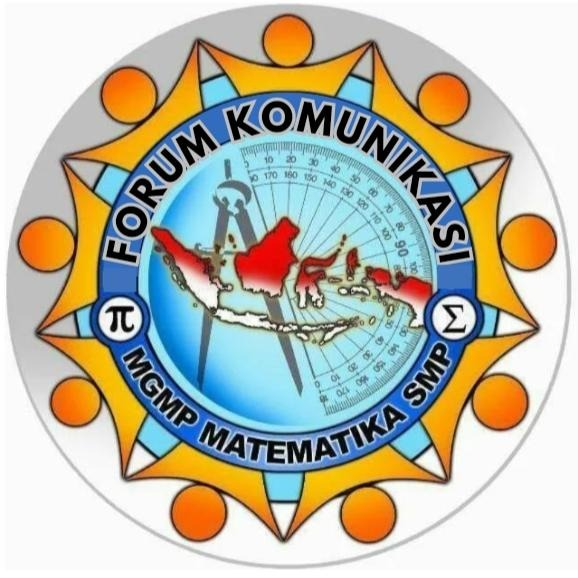
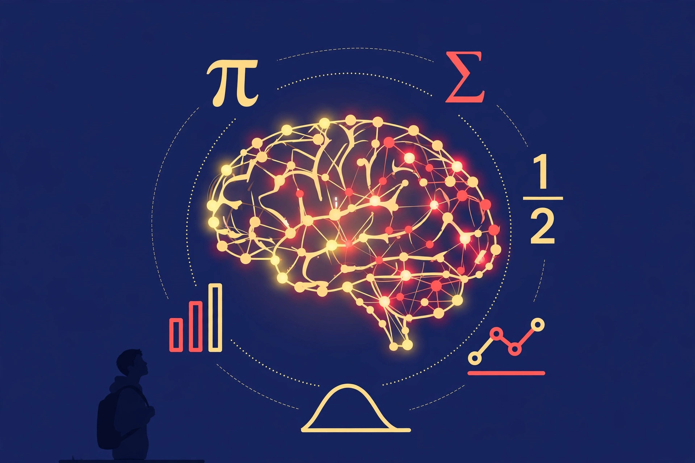

GOOGLE MEET • SABTU, 17 OKTOBER 2026 PUKUL 13.00 - 15.00 • GURU MATEMATIKA SMP (TERBUKA UNTUK UMUM)
Kuis & game interaktif buatan sendiri dalam hitungan menit
Agent AI pribadi sebagai asisten kerja guru
Materi yang membumi di dunia nyata murid
"Program komputer yang belajar dari data sehingga bisa meniru kemampuan manusia: membaca, menulis, menghitung, menggambar."
Membaca miliaran teks
Menemukan pola bahasa
Menebak lanjutan paling masuk akal
Google itu perpustakaan, AI itu asisten yang sudah membacakan bukunya. Karena AI menebak, ia bisa salah — guru yang memverifikasi.

Tetapkan CP/TP resmi + profil murid nyata (kelas, jumlah, kondisi)
Baru buka AI dengan instruksi jelas berdasar jangkar itu
Cek kebenaran & kesesuaian sebelum dipakai di kelas
AI tidak boleh memimpin — tanpa jangkar, ia mengarang tujuannya sendiri dan materi melenceng dari kurikulum.
Semakin jelas instruksinya, semakin tepat hasilnya.
Saya praktikkan langsung — Bapak/Ibu bisa mengikuti dari HP/laptop
Mari berdiskusi 💬 — sesi tanya jawab